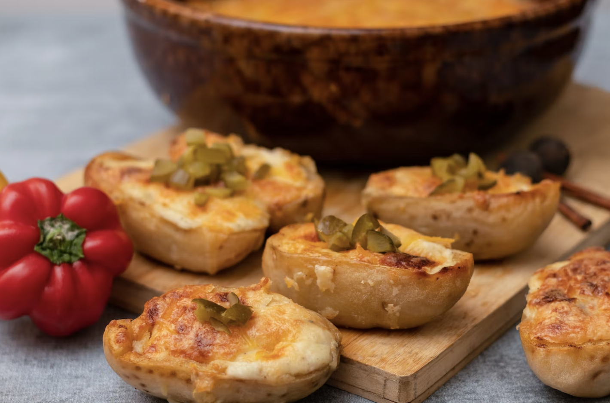

Loaded Turkey and Gravy Stuffed Potatoes

Description
Text copied from: allrecipes. Another creative way to use up leftovers! All the flavors of America's favorite eating holiday in a twice-baked potato. Serve with a green salad and you have a meal!
Ingredients:
- 4 large baking potatoes
- 1 tablespoon canola oil
- ½ cup butter, melted
- ½ cup leftover gravy
- ½ cup cream cheese
- ½ teaspoon sea salt
- ½ teaspoon ground black pepper
- 1 cup chopped cooked turkey
- 1 cup chopped leftover stuffing
- 2 green onions, thinly sliced
- 1 ¼ cups shredded Cheddar cheese, divided
Steps:
- Let's Start - Preheat the oven to 400 degrees F (200 degrees C). Place potatoes on a baking sheet; rub with canola oil.
- Moving on - Bake in the preheated oven until easily pierced with a knife, about 1 hour. Reduce oven temperature to 350 degrees F (175 degrees C).
- The potatoes - Cut potatoes in half lengthwise. Scrape flesh into the bowl of a stand mixer, being careful not to tear the skin. Leave a small rim of flesh in the skin intact. Place hollowed-out potato skins back on the baking sheet.
- The Filling - Beat butter, gravy, cream cheese, salt, and pepper into the potato flesh on low speed. Add 1 cup Cheddar cheese; mix for a few seconds. Remove bowl from the stand mixer; fold in turkey, stuffing, and green onions using a spatula.
- Putting it all together - Fill potato skins with the mixture. Sprinkle remaining 1/4 cup Cheddar cheese on top.
- Return to the oven - bake until warmed through, about 15 minutes.